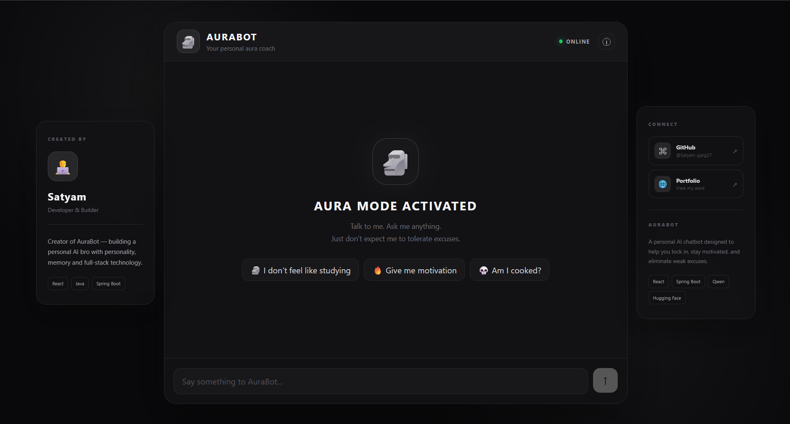
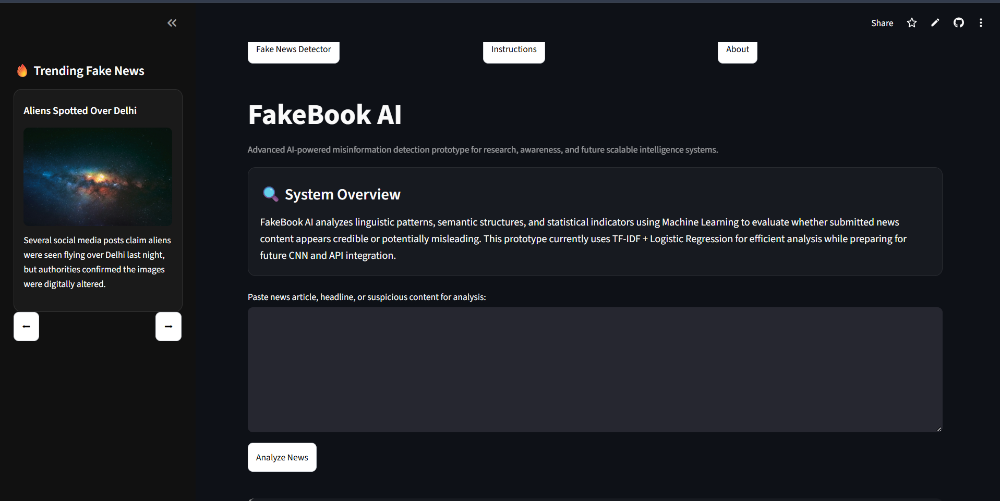
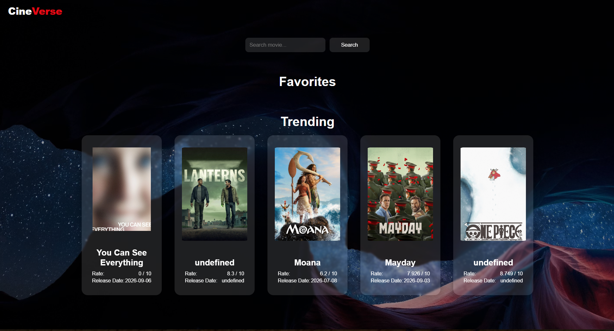
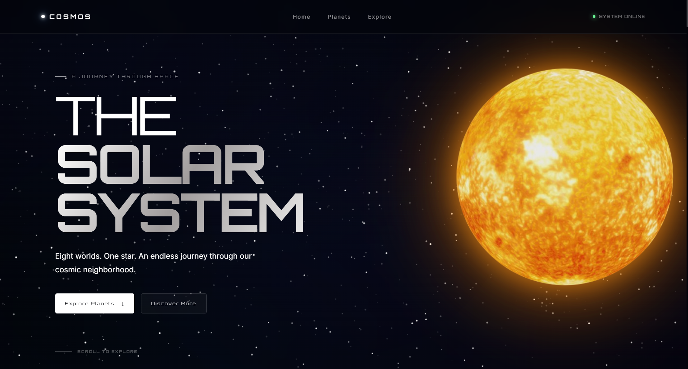
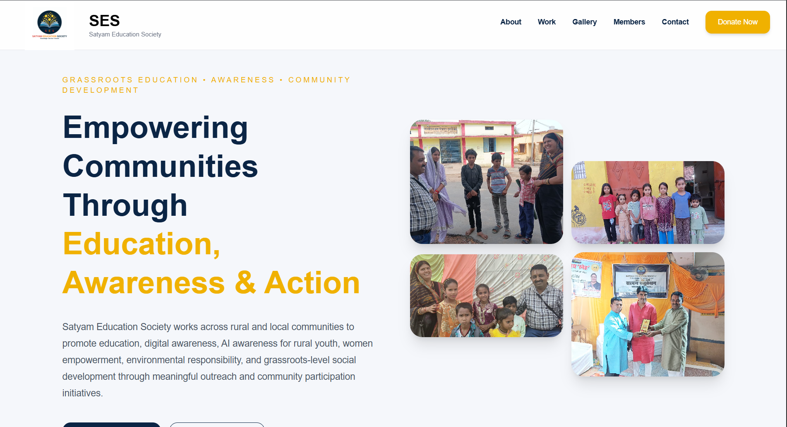

I build, break,
and figure things out.
I'm Satyam Garg, a Computer Science student exploring full-stack development, AI/ML and problem solving. I like understanding how things work — then turning that understanding into something real.

More interested in why than just what.
I don't want to simply know what a technology does. I want to understand why it works, how the pieces fit together, and what I can build with it.
My interests sit at the intersection of software development, AI/ML and problem solving. I've been using projects as a way to learn — from building web interfaces and REST-backed applications to experimenting with NLP and AI-powered systems.
Right now, I'm strengthening my foundations in full-stack development, Java, React and DSA while continuing to explore machine learning and system design concepts.
Things I've built.
Projects are where I turn curiosity into something tangible.

AuraBot
View project ↗
Fake News Detection
View project ↗
CineVerse
View project ↗
SpaceDrive
View project ↗AuraBot
View project ↗Fake News Detection
View project ↗CineVerse
View project ↗SpaceDrive
View project ↗
Building for people.
Beyond personal projects, I've had the opportunity to work with a real organization and turn its needs into a production-ready digital platform.
Frontend Web Developer
Satyam Education Society (SES)
Took ownership of the organization's website from requirements gathering through production deployment, working directly with the founder to turn a real organizational need into a functional digital platform.
Established a modern online presence for a grassroots NGO working across education, awareness, community development, environmental initiatives and social welfare.
Translated non-technical organizational requirements into an intuitive, responsive interface that communicates the NGO's mission and work clearly across devices.
Owned the technical delivery workflow, including frontend development, SEO, custom-domain setup, DNS configuration, HTTPS, hosting and automated deployments.
Established a GitHub → Vercel CI/CD workflow, making future website updates faster and more reliable.
Built a structured platform for presenting the organization's mission, leadership, initiatives, certifications, gallery and community impact.
Continue working with the organization to incorporate feedback, maintain the platform and expand its capabilities.
Currently developing an Activities & Reports section to document initiatives and make reports accessible to the public, improving transparency.
Gained hands-on experience delivering software for a real stakeholder while balancing technical decisions, communication, deployment and continuous iteration.
Tools I use to build.
A growing toolkit, not a checklist.
Languages
Frontend
Backend
Data & AI
Developer tools
Currently exploring
Learning by shipping.
Every project has been a way to move from “I wonder how this works” to “let me build it and find out.”
My LeetCode ↗Web foundations
Started by understanding the web through HTML, CSS and JavaScript, then moved into interactive interfaces and responsive design.
Full-stack thinking
Moved beyond the UI into APIs, authentication, databases and application architecture through projects like ShowVerse.
AI / ML experiments
Explored NLP and machine learning with Fake News Detection, then moved toward AI-powered application ideas with AuraBot.
Problem solving
Alongside development, I've been consistently working through DSA problems and building a stronger foundation for software engineering.
Have an idea?
I'm listening.
Whether it's a project, collaboration, opportunity, or simply a technical conversation — feel free to reach out.